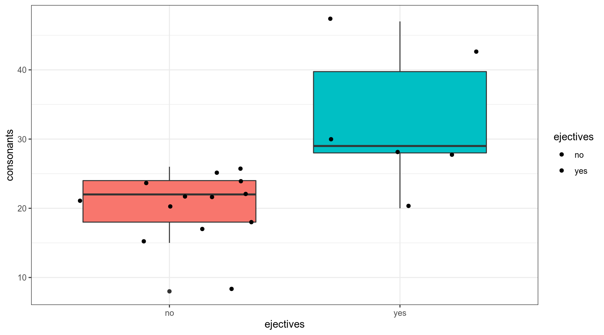
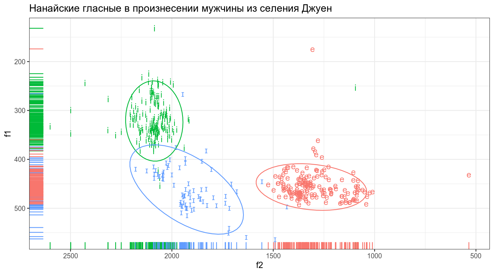
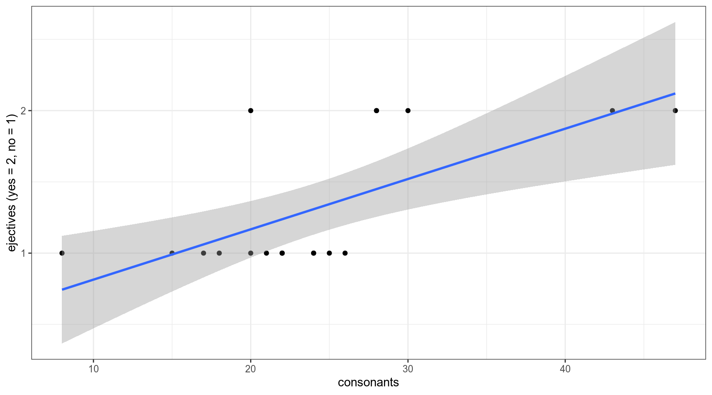
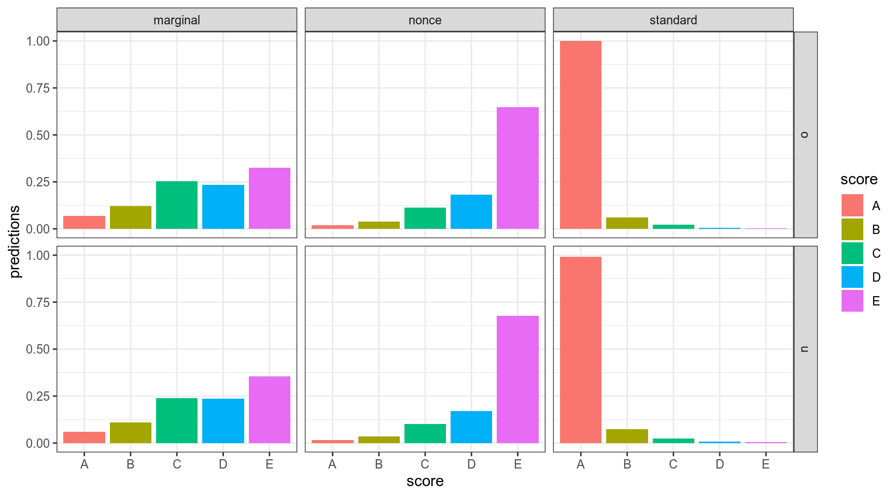
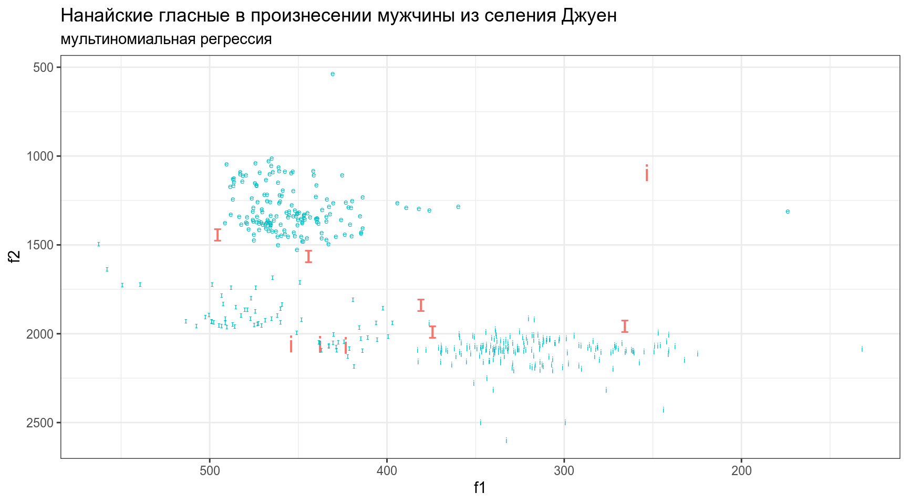

10. Логистическая и мультиномиальная регрессия
Г. Мороз
0. Введение
Логистическая (logit, logistic) и мультиномиальная (multinomial) регрессия применяются в случаях, когда зависимая переменная является категориальной:
- с двумя значениями (логистическая регрессия)
- с более чем двумя значениями (мультиномиальная регрессия)
0.2 Количество согласных и абруптивные звуки
В датасет собрано 19 языков, со следующими переменными:
- language — переменная, содержащая язык
- ejectives — бинарная переменная, обозначающая наличие абруптивных (“yes”/“no”)
- consonants — переменная, содержащая информацию о количестве согласных
- vowels — переменная, содержащая информацию о количестве гласных
ej_n_cons <- read.csv("https://goo.gl/DsRMve")
ej_n_cons %>%
ggplot(aes(ejectives, consonants, fill = ejectives, label = language))+
geom_boxplot(show.legend = FALSE)+
geom_jitter() +
theme_bw()
0.3 Данные: исследование маргинальных русских глаголов
Данные взяты из исследования [Endresen, Janda 2015], посвященное исследованию маргинальных глаголов изменения состояния в русском языке. Испытуемые (70 школьников, 51 взрослый) оценивали по шкале Ликерта (1…5) приемлемость глаголов с приставками о- и у-:
- широко используемуе в СРЛЯ (освежить, уточнить)
- встретившие всего несколько раз в корпусе (оржавить, увкуснить)
- искусственные слова (ономить, укампить)
## Parsed with column specification:
## cols(
## Gender = col_character(),
## Age = col_double(),
## AgeGroup = col_character(),
## Education = col_character(),
## City = col_character(),
## SubjectCode = col_character(),
## Score = col_character(),
## GivenScore = col_double(),
## Stimulus = col_character(),
## Prefix = col_character(),
## WordType = col_character(),
## CorpusFrequency = col_double()
## )Переменные в датасете:
- Gender
- Age
- AgeGroup — взрослые или школьники
- Education
- City
- SubjectCode — код испытуемого
- Score — оценка, поставленная испытуемым (A — самая высокая, E — самая низкая)
- GivenScore — оценка, поставленная испытуемым (5 — самая высокая, 1 — самая низкая)
- Stimulus
- Prefix
- WordType — тип слова: частотное, редкое, искусственное
- CorpusFrequency — частотность в корпусе
0.4 Нанайские данные
В этом датасете представлены три нанайских гласных i, ɪ и e, произнесенные нанайским носителем мужского пола из селения Джуен. Каждая строчка — отдельное произнесение. Переменные:
- f1 — первая форманта
- f2 — вторая форманта
## Parsed with column specification:
## cols(
## sound = col_character(),
## f1 = col_double(),
## f2 = col_double()
## )nanai %>%
ggplot(aes(f2, f1, label = sound, color = sound))+
geom_text()+
geom_rug()+
scale_y_reverse()+
scale_x_reverse()+
stat_ellipse()+
theme_bw()+
theme(legend.position = "none")+
labs(title = "Нанайские гласные в произнесении мужчины из селения Джуен")
1. Логистическая регрессия
Мы хотим чего-то такого: \[\underbrace{y}_{[-\infty, +\infty]}=\underbrace{\mbox{β}_0+\mbox{β}_1\cdot x_1+\mbox{β}_2\cdot x_2 + \dots +\mbox{β}_k\cdot x_k +\mbox{ε}_i}_{[-\infty, +\infty]}\] Вероятность — (в классической статистике) отношение количества успехов к общему числу событий: \[p = \frac{\mbox{# успехов}}{\mbox{# неудач} + \mbox{# успехов}}, \mbox{область значений: }[0, 1]\] Шансы — отношение количества успехов к количеству неудач: \[odds = \frac{p}{1-p} = \frac{p\mbox{(успеха)}}{p\mbox{(неудачи)}}, \mbox{область значений: }[0, +\infty]\] Натуральный логарифм шансов: \[\log(odds), \mbox{область значений: }[-\infty, +\infty]\]
Но, что нам говорит логарифм шансов? Как нам его интерпретировать?
tibble(n = 10,
success = 1:9,
failure = n - success,
prob.1 = success/(success+failure),
odds = success/failure,
log_odds = log(odds),
prob.2 = exp(log_odds)/(1+exp(log_odds)))Как связаны вероятность и логарифм шансов: \[\log(odds) = \log\left(\frac{p}{1-p}\right)\] \[p = \frac{\exp(\log(odds))}{1+\exp(\log(odds))}\]
Как связаны вероятность и логарифм шансов:
tibble(p = seq(0, 1, 0.001),
log_odds = log(p/(1-p))) %>%
ggplot(aes(log_odds, p))+
geom_line()+
labs(x = latex2exp::TeX("$log\\left(\\frac{p}{1-p}\\right)$"))+
theme_bw()
1.1 Почему не линейную регрессию?
lm_0 <- lm(as.integer(ejectives)~1, data = ej_n_cons)
lm_1 <- lm(as.integer(ejectives)~consonants, data = ej_n_cons)
lm_0##
## Call:
## lm(formula = as.integer(ejectives) ~ 1, data = ej_n_cons)
##
## Coefficients:
## (Intercept)
## 1.316##
## Call:
## lm(formula = as.integer(ejectives) ~ consonants, data = ej_n_cons)
##
## Coefficients:
## (Intercept) consonants
## 0.4611 0.0353Первая модель: \[ejectives = 1.316 \times consonants\] Вторая модель: \[ejectives = 0.4611 + 0.0353 \times consonants\]
1.2 Логит: модель без предиктора
Будьте осторожны, glm не работает с тибблом.
##
## Call:
## glm(formula = ejectives ~ 1, family = "binomial", data = ej_n_cons)
##
## Deviance Residuals:
## Min 1Q Median 3Q Max
## -0.8712 -0.8712 -0.8712 1.5183 1.5183
##
## Coefficients:
## Estimate Std. Error z value Pr(>|z|)
## (Intercept) -0.7732 0.4935 -1.567 0.117
##
## (Dispersion parameter for binomial family taken to be 1)
##
## Null deviance: 23.699 on 18 degrees of freedom
## Residual deviance: 23.699 on 18 degrees of freedom
## AIC: 25.699
##
## Number of Fisher Scoring iterations: 4## (Intercept)
## -0.7731899##
## no yes
## 13 6## [1] -0.7731899## [1] 0.3157895## [1] 0.31578951.3 Логит: модель c одним числовым предиктором
##
## Call:
## glm(formula = ejectives ~ consonants, family = "binomial", data = ej_n_cons)
##
## Deviance Residuals:
## Min 1Q Median 3Q Max
## -1.08779 -0.49331 -0.20265 0.02254 2.45384
##
## Coefficients:
## Estimate Std. Error z value Pr(>|z|)
## (Intercept) -12.1123 6.1266 -1.977 0.0480 *
## consonants 0.4576 0.2436 1.878 0.0603 .
## ---
## Signif. codes: 0 '***' 0.001 '**' 0.01 '*' 0.05 '.' 0.1 ' ' 1
##
## (Dispersion parameter for binomial family taken to be 1)
##
## Null deviance: 23.699 on 18 degrees of freedom
## Residual deviance: 12.192 on 17 degrees of freedom
## AIC: 16.192
##
## Number of Fisher Scoring iterations: 6## (Intercept) consonants
## -12.1123347 0.4576095ej_n_cons %>%
mutate(ejectives = as.integer(ejectives)-1) %>%
ggplot(aes(consonants, ejectives)) +
geom_point()+
theme_bw()+
geom_smooth(method = "glm",
method.args = list(family = "binomial"),
se = FALSE)
Какова вероятность, что в языке с 29 согласными есть абруптивные?
## (Intercept) consonants
## -12.1123347 0.4576095\[\log\left({\frac{p}{1-p}}\right)_i=\beta_0+\beta_1\times consinants_i + \epsilon_i\] \[\log\left({\frac{p}{1-p}}\right)=-12.1123347 + 0.4576095 \times 29 = 1.158341\] \[p = \frac{e^{1.158341}}{1+e^{1.158341}} = 0.7610311\]
## 1
## 1.158341## 1
## 0.76103121.4 Логит: модель c одним категориальным предиктором
##
## Call:
## glm(formula = ejectives ~ area, family = "binomial", data = ej_n_cons)
##
## Deviance Residuals:
## Min 1Q Median 3Q Max
## -1.66511 -0.55525 -0.00013 0.75853 1.97277
##
## Coefficients:
## Estimate Std. Error z value Pr(>|z|)
## (Intercept) 1.319e-17 1.000e+00 0.000 1.000
## areaAustralia -1.857e+01 6.523e+03 -0.003 0.998
## areaEurasia -1.792e+00 1.472e+00 -1.217 0.224
## areaNorth America 1.099e+00 1.528e+00 0.719 0.472
## areaPapua -1.857e+01 6.523e+03 -0.003 0.998
## areaSouth America -1.857e+01 4.612e+03 -0.004 0.997
##
## (Dispersion parameter for binomial family taken to be 1)
##
## Null deviance: 23.699 on 18 degrees of freedom
## Residual deviance: 15.785 on 13 degrees of freedom
## AIC: 27.785
##
## Number of Fisher Scoring iterations: 17## (Intercept) areaAustralia areaEurasia areaNorth America
## 1.318587e-17 -1.856607e+01 -1.791759e+00 1.098612e+00
## areaPapua areaSouth America
## -1.856607e+01 -1.856607e+01##
## Africa Australia Eurasia North America Papua South America
## no 2 1 6 1 1 2
## yes 2 0 1 3 0 0## [1] -1.791759## [1] 1.0986121.5 Логит: множественная регрессия
##
## Call:
## glm(formula = ejectives ~ consonants + area, family = "binomial",
## data = ej_n_cons)
##
## Deviance Residuals:
## Min 1Q Median 3Q Max
## -1.54011 -0.18623 -0.00012 0.00023 1.53307
##
## Coefficients:
## Estimate Std. Error z value Pr(>|z|)
## (Intercept) -21.1760 15.1089 -1.402 0.161
## consonants 0.8137 0.5653 1.439 0.150
## areaAustralia -16.2910 10754.0138 -0.002 0.999
## areaEurasia -1.2069 3.9399 -0.306 0.759
## areaNorth America 4.0966 4.8563 0.844 0.399
## areaPapua -4.8995 10754.0184 0.000 1.000
## areaSouth America -17.1162 7065.6839 -0.002 0.998
##
## (Dispersion parameter for binomial family taken to be 1)
##
## Null deviance: 23.6989 on 18 degrees of freedom
## Residual deviance: 6.7901 on 12 degrees of freedom
## AIC: 20.79
##
## Number of Fisher Scoring iterations: 181.6 Логит: сравнение моделей
## [1] 25.69888## [1] 16.19167## [1] 27.78549## [1] 20.79005Для того, чтобы интерпретировать коэффициенты нужно проделать трансформацю:
## (Intercept) consonants
## -99.99945 58.02918Перед нами процентное изменние шансов при увеличении независимой переменной на 1.
Было предложено много аналогов R\(^2\), например, McFadden’s R squared:
## llh llhNull G2 McFadden r2ML r2CU
## -6.0958355 -11.8494421 11.5072132 0.4855593 0.4542765 0.63738122. Порядковая логистическая регрессия
## [1] "A" "B" "C" "D" "E"ordinal <- MASS::polr(Score~Prefix+WordType+CorpusFrequency, data = marginal_verbs)
summary(ordinal)##
## Re-fitting to get Hessian## Call:
## MASS::polr(formula = Score ~ Prefix + WordType + CorpusFrequency,
## data = marginal_verbs)
##
## Coefficients:
## Value Std. Error t value
## Prefixu 0.136619 5.286e-02 2.584
## WordTypenonce 1.340603 5.693e-02 23.549
## WordTypestandard -4.655327 1.251e-01 -37.211
## CorpusFrequency -0.001015 7.879e-05 -12.876
##
## Intercepts:
## Value Std. Error t value
## A|B -2.6275 0.0753 -34.8784
## B|C -1.4531 0.0552 -26.3246
## C|D -0.2340 0.0479 -4.8853
## D|E 0.7324 0.0492 14.8986
##
## Residual Deviance: 13138.47
## AIC: 13154.47## Prefixu WordTypenonce WordTypestandard CorpusFrequency
## 0.136619412 1.340602696 -4.655327418 -0.001014583Как и раньше, можно преобразовать коэффициенты:
## Prefixu WordTypenonce WordTypestandard CorpusFrequency
## 14.6391763 282.1345921 -99.0489201 -0.1014068\[\log(\frac{p(A)}{p(B|C|D|E)}) = -2.6275 + 0.136619412 \times Prefixu + 1.340602696 \times WordTypenonce -\]
\[-4.655327418 \times WordTypestandard -0.001014583\times CorpusFrequency\] \[\log(\frac{p(A|B)}{p(C|D|E)}) = -1.4531 + 0.136619412 \times Prefixu + 1.340602696 \times WordTypenonce\] \[-4.655327418 \times WordTypestandard -0.001014583\times CorpusFrequency\] \[\log(\frac{p(A|B|C)}{p(D|E)}) = -0.2340 + 0.136619412 \times Prefixu + 1.340602696 \times WordTypenonce\] \[-4.655327418 \times WordTypestandard -0.001014583\times CorpusFrequency\] \[\log(\frac{p(A|B|C|D)}{p(E)}) = 0.7324 + 0.136619412 \times Prefixu + 1.340602696 \times WordTypenonce\] \[-4.655327418 \times WordTypestandard -0.001014583\times CorpusFrequency\]
## [1] A A E E A A
## Levels: A B C D E## A B C D E
## 1 0.99178000 0.005665533 0.001798242 0.0004683707 0.0002878525
## 2 0.93841926 0.041706786 0.013917668 0.0036817261 0.0022745617
## 3 0.06764594 0.122509282 0.252611927 0.2334448870 0.3237879649
## 4 0.01855865 0.039108932 0.113894002 0.1808984667 0.6475399508
## 5 0.90986002 0.060436871 0.020738032 0.0055351143 0.0034299624
## 6 0.91496678 0.057117954 0.019500629 0.0051963745 0.0032182669marginal_verbs %>%
bind_cols(as_tibble(predict(ordinal, type = "probs"))) %>%
gather(score, predictions, A:E) %>%
ggplot(aes(x = score, y = predictions, fill = score)) +
geom_col(position = "dodge")+
facet_grid(Prefix~WordType)+
theme_bw()
3. Мультиномиальная регрессия
## # weights: 12 (6 variable)
## initial value 462.515774
## iter 10 value 51.522626
## iter 20 value 46.817442
## iter 30 value 44.829080
## iter 40 value 44.807654
## iter 40 value 44.807654
## final value 44.807654
## converged## Call:
## nnet::multinom(formula = sound ~ f1 + f2, data = nanai)
##
## Coefficients:
## (Intercept) f1 f2
## i -22.85202 -0.04263175 0.02315226
## ɪ -41.46147 0.02360077 0.01937067
##
## Residual Deviance: 89.61531
## AIC: 101.6153\[\log(\frac{p(e)}{p(ɪ)}) = -41.46147 + 0.02360077\times f1 +0.01937067\times f2\] \[\log(\frac{p(i)}{p(ɪ)}) = -22.85202 -0.04263175\times f1 + 0.02315226\times f2\]
nanai %>%
mutate(prediction = predict(mult),
correctness = sound == prediction) %>%
ggplot(aes(f1, f2, label = sound, color = correctness))+
geom_text(aes(size = !correctness), show.legend = FALSE)+
scale_y_reverse()+
scale_x_reverse()+
theme_bw()+
labs(title = "Нанайские гласные в произнесении мужчины из селения Джуен",
subtitle = "мультиномиальная регрессия")## Warning: Using size for a discrete variable is not advised.